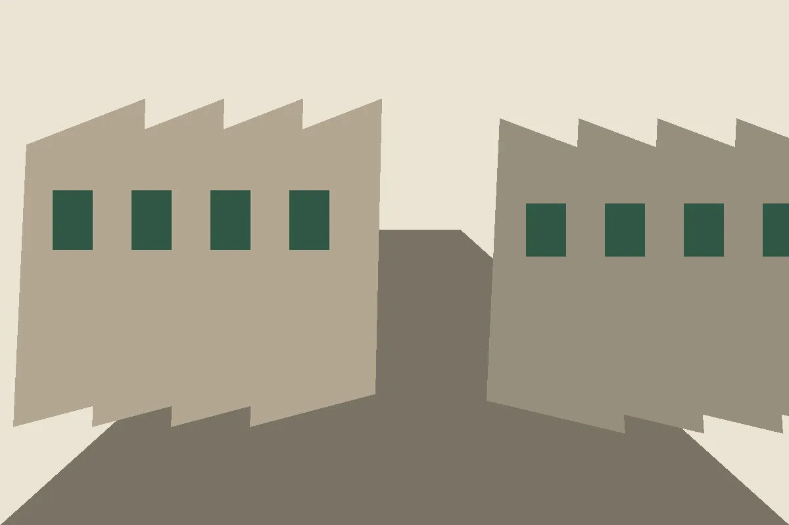
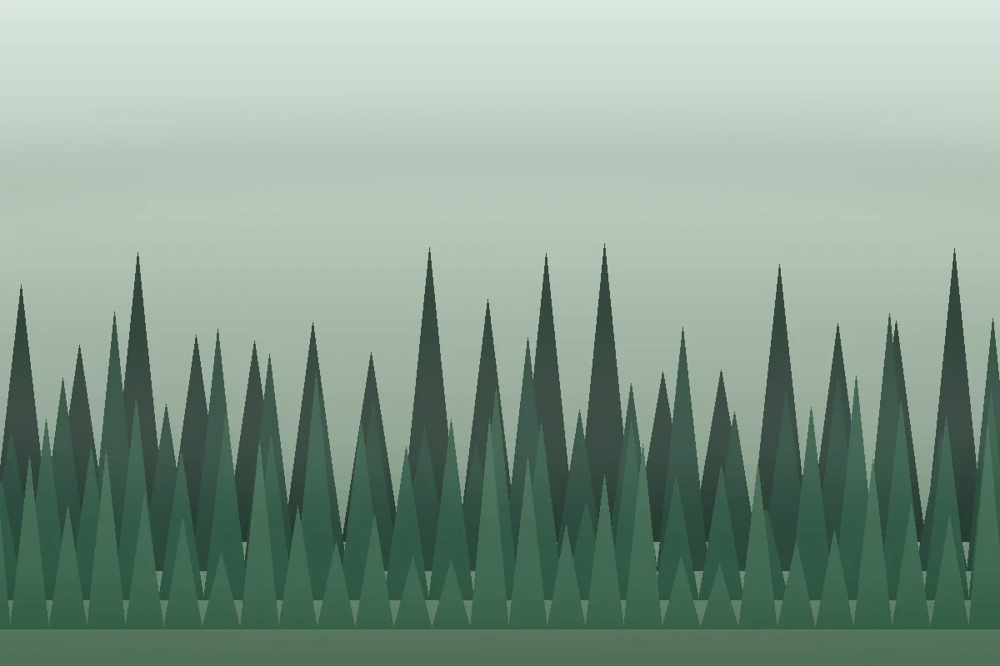
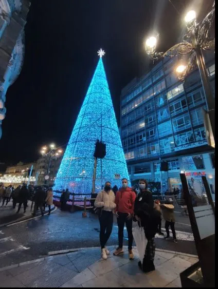
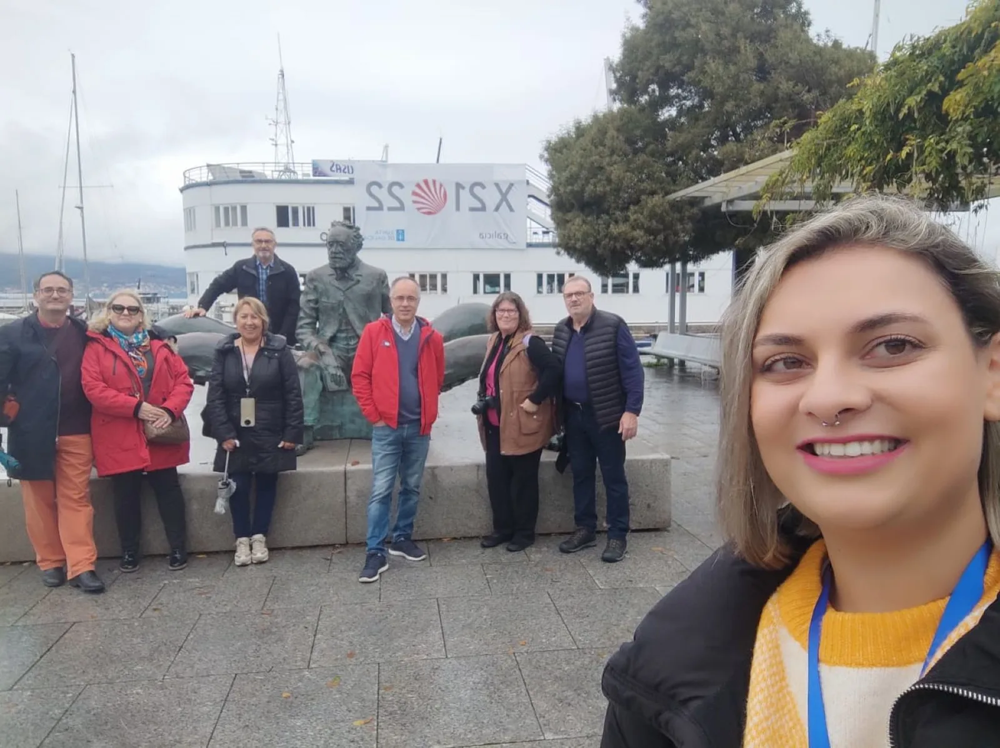
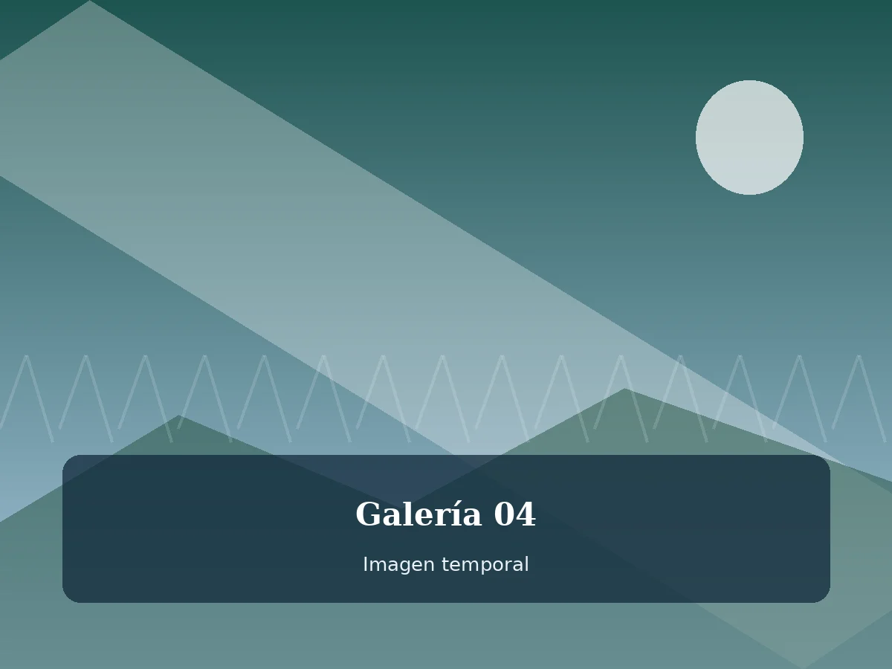

Tour urbano
Pontevedra
Un paseo por plazas, calles y relatos que conectan patrimonio, memoria local y pequeñas leyendas.
Zona Meiga Tours
Visitas guiadas, experiencias culturales y recorridos por lugares llenos de historia, tradición y misterio.
Entre historia y leyenda
Este proyecto nace como una página estática de prueba para construir una base frontend clara, visual y mantenible antes de añadir una capa de backend.
La idea es trabajar una experiencia sencilla: páginas bien estructuradas, contenido fácil de leer, imágenes cuidadas y una estética que mezcle naturaleza, patrimonio y un toque místico.
Esta primera versión nos sirve para validar colores, tipografías, espaciados, cards, galería, header, footer y comportamiento responsive.
Rutas destacadas
Cards editoriales pensadas para presentar rutas o páginas interiores de forma visual, clara y reutilizable.
Galería
Un mosaico visual para probar cómo funcionarían las imágenes en una futura página de galería o en bloques destacados.




Empieza la ruta
Cuando esta estructura funcione bien, podremos crear el resto de páginas manteniendo una experiencia coherente.